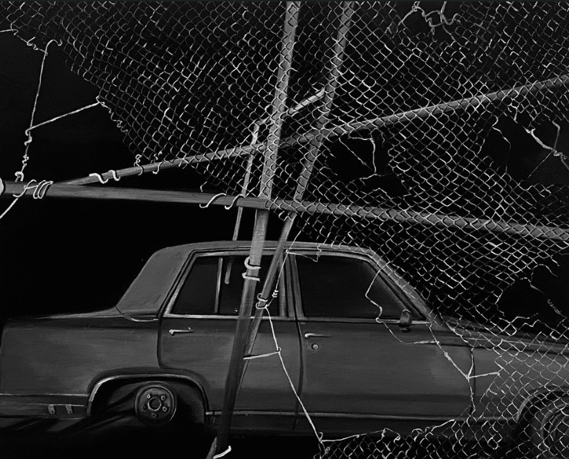

2023
Broken Boundary
Observed through the wire. The distorted geometry of the fence breaking the silence of the parked car. A study of separation.
Observed through the wire. The distorted geometry of the fence breaking the silence of the parked car. A study of separation.
The raw contrast of cold metal chains biting into dark rubber. A memory of winter roads.


Capturing a moment of deep introspection. The high contrast lighting emphasizes the strength and fragility of the gaze.
A classic silhouette against a cold backdrop. Where the sharp industrial lines meet the absolute stillness of the night.